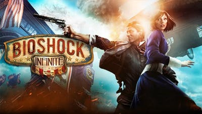
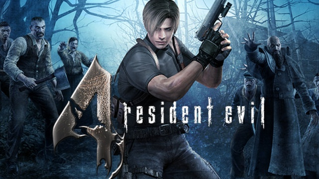
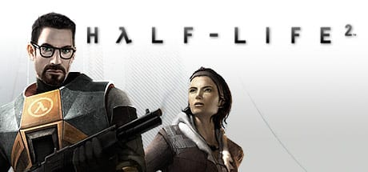
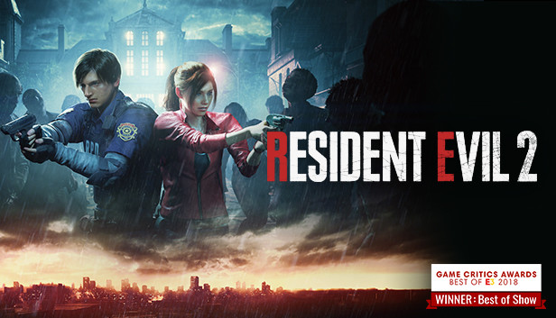
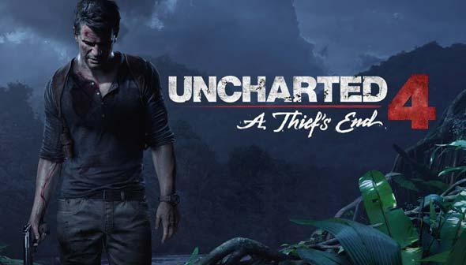
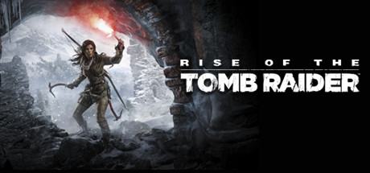
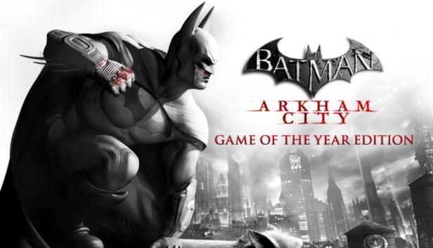
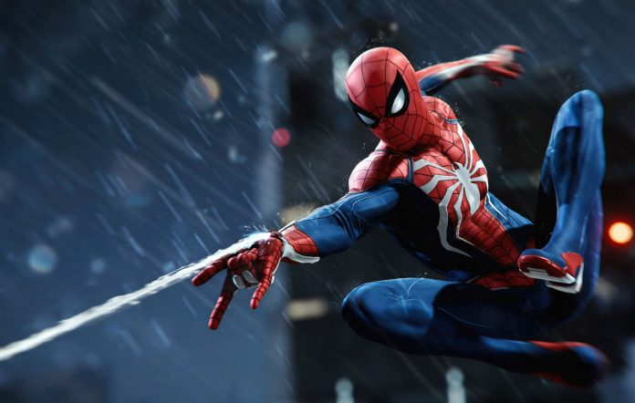

My favorite single-player games
Bioshock Infinite
Resident Evil 4
Half Life 2
Resident Evil 2 Remake
Assassin's Creed II

Uncharted 4
Rise of the Tomb Raider
Batman Arkham City
Spiderman (PS4)
Metro Exodus

Some games I recommend for other people
First off, everyone has their own taste and like different kinds of games. It is important to know what type of platform they prefer to play on since not all games are available on more than one console. If this is not a concern, then all that is left to decide is what kind of games they like. For people who like single player games such as myself, I'd especially recommend the games I have listed above, though it is just my opinion. I enjoy single-player games because I love to experience a story-rich experience and atmospheric environment. You can't really enjoy those with a multiplayer game... I do still play multiplayer games though. Now let's talk about the different categories. In order to keep this short, we'll need to talk about gameplay only. If you enjoy FPS games, I would recommend Tom Clancy's Rainbow Six Siege. For racing games, Forza Horizon 4 is fabulous. The graphics to the realistic physics make this game an icon in the racing category. For fighting games, I would recommend Tekken 7. There are many different combos and moves you can use and lot of mechanics in the game. For horror games, I definitely recommend Outlast 2. The game takes place in midwest and approaches a different style of horror which I find really unique...And if you enjoy being chased by crazy people every 5 minutes, this game won't dissapoint. These games should definitely be given a try.